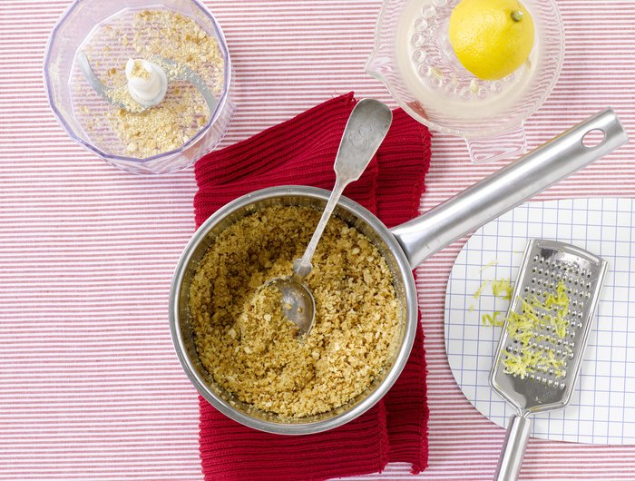
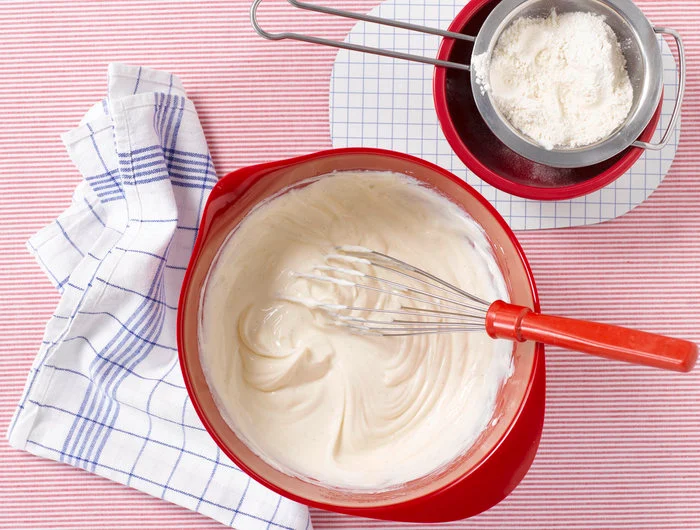
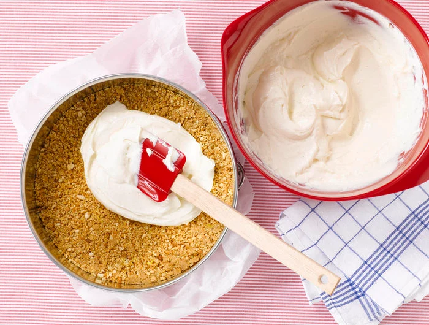
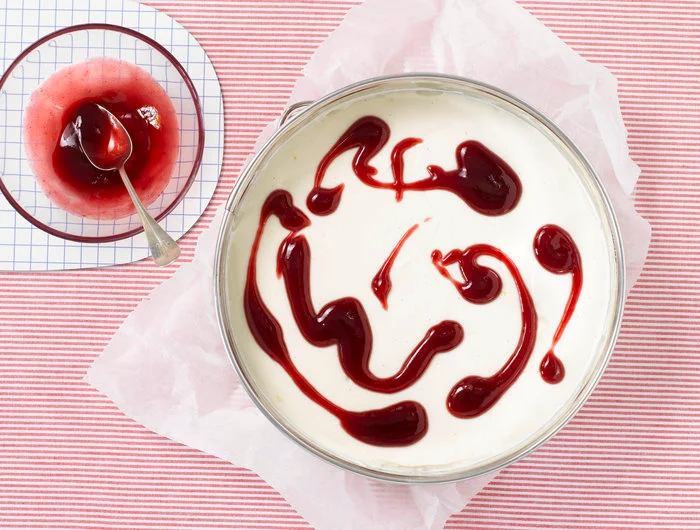

- Arbeitszeit: 20 min.
- Backen: 45 min.
- Kühlen: 120 min.
- Niveau: Mittel
Der New York Cheesecake ist schnell und einfach zu machen. Aber das ist nicht allein der Grund, warum ihn die Amerikaner so lieben. Seine einzigartige Quarkcreme ist einfach ein Traum.
Zutaten
Für den Boden
- 1 unbehandelte Zitrone
- 100 g Butterkekse
- 35 g Butter
Für die Cheesecake-Creme
- 300 g Frischkäse
- 500 g Sahnequark
- 1 Pck. Vanillezucker
- 120 g Zucker
- 50 g Mehl
- 3 EL Kirschgelee
Zubereitung
-
Für den Boden Zitrone heiß abspülen, trocken reiben und die Schale fein abreiben. Butterkekse grob zerbröckeln und in einer Küchenmaschine oder einem Mixer fein zermahlen. Butter bei schwacher Hitze in einem Topf schmelzen lassen. Topf vom Herd ziehen, Keksbrösel sowie 1⁄2 TL Zitronenschale zur Butter geben und gründlich einrühren. Alles mit den Händen oder den Knethaken des Handrührgeräts gleichmäßig krümelig durcharbeiten.
 -
Den Boden einer Springform (Ø 24–26 cm) mit Backpapier auslegen. Die Krümel-Butter-Mischung darin gleichmäßig verteilen und leicht andrücken. Ofen auf 180 Grad vorheizen (Umluft: 160).
-
Für die Creme Zitrone halbieren und auspressen. Frischkäse, Sahnequark, 3 EL Zitronensaft, übrige Zitronenschale, Vanillezucker und Zucker in eine Rührschüssel geben. Mit einem Schneebesen oder Handrührgerät zu einer glatten Creme verquirlen. Mehl in ein feines Sieb geben, gleichmäßig über die Creme sieben und gründlich unterrühren.
 -
Cheesecake-Creme auf den Boden füllen und glatt streichen.
 -
Gelee in einem kleinen Topf bei schwacher Hitze unter Rühren erwärmen. Diesen anschließend mit einem Teelöffel schlierenartig auf der Cremeoberfläche verteilen. Den Kuchen im heißen Backofen auf mittlerer Schiene ca. 45 Minuten zart goldgelb backen.
 -
Kuchen aus dem Backofen nehmen und in der Form auf einem Kuchengitter vollständig auskühlen lassen. Dann den Cheesecake in der Form mindestens zwei Stunden im Kühlschrank gut durchkühlen lassen.
-
Zum Servieren den Cheesecake vorsichtig mit einem Messer vom Formrand lösen, auf eine Tortenplatte setzen und anrichten